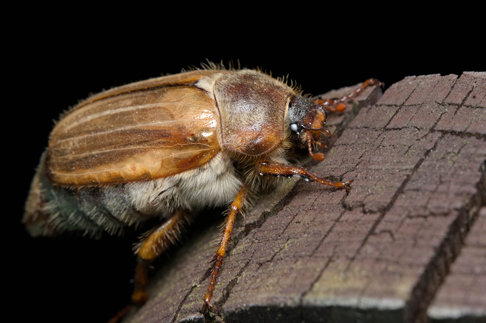

Nikon D500 · Laowa 100mm Macro @ 100mm · f/16 · 1/250 s · ISO 1800 · July 2025 · Poland
A friendly Summer chafer (Amphimallon solstitiale) giving me a close look on my fence post. I have seen these fairly sizeable beetles descending in massive numbers upon a tree that fits their liking, creating a rather loud buzz and clumsily colliding with any obstacles in their vicinity only to have all but disappeared by the next morning. The purpose of their visit still remains a mystery.